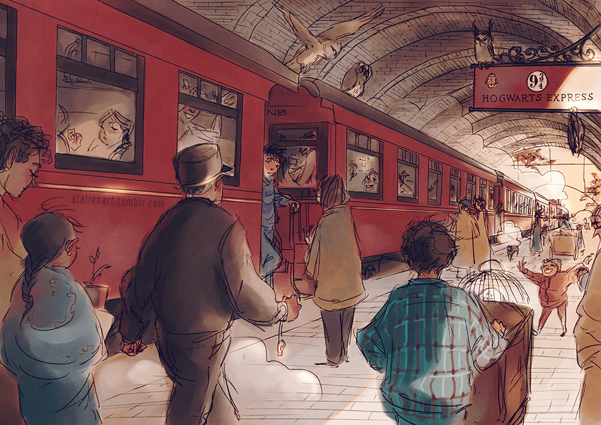
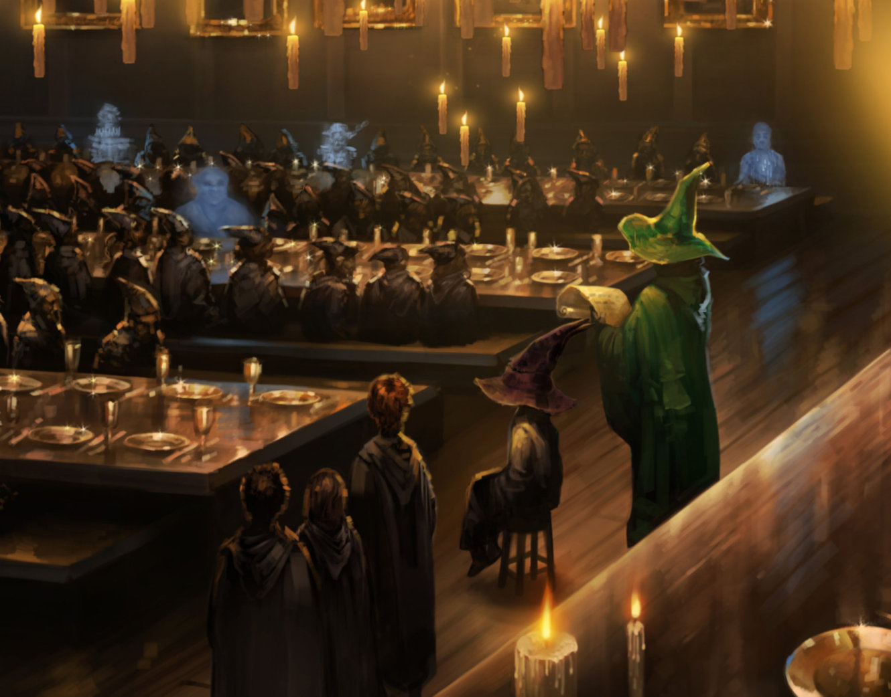

Hogwarts School of Witchcraft and Wizardry

"The finest school of witchcraft and wizardry in the world."
- Rubeus Hagrid
Entrance & Admission:

Hogwarts School of Witchcraft and Wizardry is one of the most well-respected wizarding schools in the world. Located in the Highlands of Scotland, it accepts students from all over the United Kingdom - as well as Ireland - from the age of 11. Once there, the young wizards are greeted by an enormous castile which towers over sweeping grounds, a huge loch and a large, dense forest, all of which are shielded from Muggle eyes by charms.
Admission to Hogwarts is selective, in that children who show magical ability will automatically gain a place, and squibs cannot attend the school as students (though they can work there in other roles. A magical quill at Hogwarts detects the birth of magical children and writes their names into a large parchment book, but there is no admission test because "you are either magical or you are not." Every year, a teacher checks this book and sends a letter to the children who are turning eleven. Acceptance or refusal of a place at Hogwarts must be posted by 31 July. The letter also contains a list of supplies like spell books, uniform, and other things that the student will need. The prospective student is expected to buy all the necessary materials, normally from shops in Diagon Alley, a concealed street near Charing Cross Road in London that can be found behind the wizarding pub, The Leaky Cauldron. Students who cannot afford their supplies can receive financial aid from the school.
Letters to Muggle-born witches and wizards, who may not be aware of their powers and are unfamiliar with the concealed wizarding world, are delivered in person by a member of Hogwarts staff, who then explains to the parents or guardians about magical society, and reassures them regarding this news.
Though the school is in Great Britain, its catchment area is the wider British Isles, as Irish students can also attend.
Each student is allowed to bring an owl OR a cat OR a toad. Along with the acceptance letter, first-year students are sent a list of required equipment which includes a wand, subject books, a standard size 2 pewter cauldron, a set of brass scales, a set of glass or crystal phials, a kit of basic potion ingredients (for Potions), and a telescope (for Astronomy). The Hogwarts uniform consists of plain work robes in black, a plain black hat, a pair of protective gloves, and a black winter cloak with silver fastenings. Each uniform must contain the wearer's nametag. First years are not allowed a broomstick of their own, though an exception to this rule is made for Harry in his first year after he demonstrates an excellent ability as a Seeker in Quidditch.
Houses & Sorting:
Hogwarts is divided into four houses, each bearing the last name of its founder: Godric Gryffindor, Salazar Slytherin, Rowena Ravenclaw and Helga Hufflepuff. Throughout the school year, the houses compete for the House Cup, gaining and losing points based on actions such as performance in class and rule violations. The house with the highest end-of-year total wins and has its colours displayed in the Great Hall for the following school year. Each house also has its own Quidditch team that competes for the Quidditch Cup. These two competitions breed rivalries between the houses. Houses at Hogwarts are living and learning communities for their students. Each house is under the authority of one of the Hogwarts staff members. The Heads of the houses, as they are called, are in charge of giving their students important information, dealing with matters of severe punishment, and responding to emergencies in their houses, among other things. Each year, year level groups of every separate house share the same dormitory and classes. The dormitory and common room of a House are, barring rare exceptions, inaccessible to students belonging to other Houses.
In the early days of Hogwarts, the four founders hand-picked students for their Houses. When the founders worried how students would be selected after their deaths, Godric Gryffindor took his hat off and they each added knowledge to it, allowing the Sorting Hat to choose the students by judging each student's qualities and placing them in the most appropriate house. The student's own choices may affect the decision.
Find out your Hogwarts house at pottermore.com